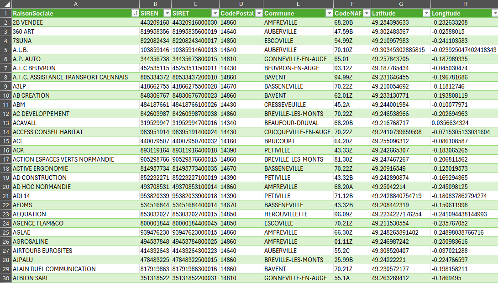

Le problème
Une tâche manuelle, répétée chaque année
La Redevance Spéciale (RS) est due par les professionnels qui produisent plus de 900 litres d'ordures ménagères par semaine sur au moins 4 semaines consécutives dans l'année. Pour un EPCI de 38 communes, identifier ces assujettis implique traditionnellement de croiser des fichiers Excel, des extractions SIRENE et des visites terrain - un processus long, source d'erreurs et difficile à maintenir à jour.
À cela s'ajoute une contrainte réglementaire : les professionnels assujettis à la RS sont exonérés de la TEOM. Un listing incomplet ou obsolète se traduit donc directement par des pertes de recettes ou des doubles facturations.
Les données
Deux API publiques complémentaires
L'État met à disposition deux API gratuites, sans authentification, qui couvrent exactement le besoin :
etat=A). Retourne SIRET, raison sociale, code NAF, adresse complète et coordonnées GPS de l'établissement local - pas du siège.Un point important sur la localisation : l'API distingue l'objet siege (siège social, potentiellement à Paris pour une grande chaîne) de l'objet matching_etablissements (établissements réellement situés dans la commune requêtée). La requête utilise ce dernier pour garantir des coordonnées GPS locales et pertinentes.
La méthode
Un enchaînement en trois requêtes Power Query
La solution s'organise autour de trois requêtes M imbriquées. La première est une fonction utilitaire réutilisable ; les deux suivantes font le travail de collecte et d'assemblage.
Chaque requête appelle la précédente. FnAppelAPI centralise la gestion des codes d'erreur HTTP ; Communes_EPCI récupère les 38 codes INSEE en un seul appel ; Entreprises_EPCI itère sur chaque commune avec pagination automatique et agrège tous les résultats.
Requête 1 - Fonction d'appel API
Centralise les headers HTTP et la gestion silencieuse des erreurs. Retourne null en cas d'échec plutôt que de faire planter toute la requête.
// Fonction réutilisable - gère les erreurs HTTP silencieusement (url as text) as any => let Source = try Json.Document( Web.Contents(url, [ Headers = [ Accept = "application/json", #"User-Agent" = "PowerQuery/1.0" ], ManualStatusHandling = {400, 404, 429, 500, 503} ]) ) otherwise null in Source
Requête 2 - Communes de l'EPCI
Un seul appel API suffit pour récupérer les 38 codes INSEE. La requête transforme la liste JSON en table Power Query exploitable.
let UrlCommunes = "https://geo.api.gouv.fr/epcis/200065563/communes" & "?fields=code,nom&format=json", Reponse = FnAppelAPI(UrlCommunes), ListeCommunes = if Reponse = null then {} else Reponse, TableCommunes = Table.FromList( ListeCommunes, Splitter.SplitByNothing(), null, null, ExtraValues.Error ), Expansion = Table.ExpandRecordColumn( TableCommunes, "Column1", {"code", "nom"}, {"CodeCommune", "NomCommune"} ) in Expansion
Requête 3 - Entreprises avec pagination automatique
Le cœur du dispositif. Pour chaque commune, une fonction interne calcule le nombre total de pages à récupérer et les agrège. L'objet matching_etablissements garantit des coordonnées locales plutôt que celles du siège.
let NbParPage = 25, // Récupère une page de résultats pour une commune donnée FnUnePage = (codeCommune as text, page as number) as any => let Url = "https://recherche-entreprises.api.gouv.fr/search?" & "code_commune=" & codeCommune & "&etat=A&per_page=" & Number.ToText(NbParPage) & "&page=" & Number.ToText(page), Reponse = FnAppelAPI(Url) in Reponse, // Récupère toutes les pages pour une commune (pagination auto) FnToutesPages = (codeCommune as text) as list => let Page1 = FnUnePage(codeCommune, 1), EstValide = Page1 <> null and Record.HasFields(Page1, "results"), Resultats1 = if EstValide then Page1[results] else {}, Total = if EstValide and Record.HasFields(Page1, "total_results") then Page1[total_results] else 0, NbPages = Number.RoundUp(Total / NbParPage), AutresPages = if NbPages <= 1 then {} else List.TransformMany( List.Numbers(2, NbPages - 1), (p) => let R = FnUnePage(codeCommune, p) in if R <> null and Record.HasFields(R, "results") then R[results] else {}, (p, r) => r ), TousResultats = Resultats1 & AutresPages in TousResultats, // Itération sur les 38 communes de l'EPCI ListeCommunes = Communes_EPCI, AvecEntreprises = Table.AddColumn( ListeCommunes, "Entreprises", (ligne) => FnToutesPages(ligne[CodeCommune]), type list ), // Expansion : une ligne par entreprise Expansion1 = Table.ExpandListColumn(AvecEntreprises, "Entreprises"), SansNull = Table.SelectRows(Expansion1, each [Entreprises] <> null), // Extraction des champs entreprise et établissement local Expansion2 = Table.ExpandRecordColumn(SansNull, "Entreprises", {"nom_raison_sociale", "siren", "matching_etablissements"}, {"RaisonSociale", "SIREN", "Etablissements"} ), // Expansion : une ligne par établissement local // (une entreprise peut avoir plusieurs établissements dans la commune) Expansion3 = Table.ExpandListColumn(Expansion2, "Etablissements"), SansNullEtab = Table.SelectRows(Expansion3, each [Etablissements] <> null), Expansion4 = Table.ExpandRecordColumn(SansNullEtab, "Etablissements", {"siret", "code_postal", "libelle_commune", "activite_principale", "latitude", "longitude"}, {"SIRET", "CodePostal", "Commune", "CodeNAF", "Latitude", "Longitude"} ), TableFinale = Table.SelectColumns(Expansion4, {"RaisonSociale", "SIREN", "SIRET", "CodePostal", "Commune", "CodeNAF", "Latitude", "Longitude"} ), SansDoublons = Table.Distinct(TableFinale, {"SIRET"}) in SansDoublons
Résultats
La table dans Excel
Une fois l'actualisation terminée (2 à 5 minutes pour les 38 communes), la table apparaît directement dans Excel avec toutes les colonnes prêtes à l'emploi.

Ce que ça ouvre
Possibilités une fois les données récupérées
La table obtenue devient le socle d'un outil de gestion complet. Plusieurs enrichissements sont envisageables sans quitter Excel :
200065563 par celui de l'intercommunalité cible.